活躍時代：1996至2004年
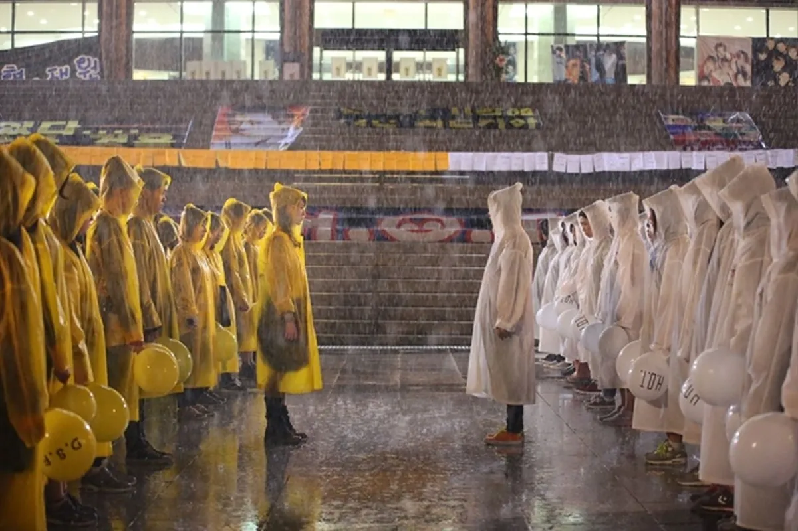
當時網路不方便，粉絲文化與現在完全不同，例如偶像在電視上的演出，要事前先以錄影帶預錄；演唱會門票開售前一天，則要到專賣演唱會門票的銀行排隊；或是新專輯販售當天，粉絲們都會在唱片店前排隊購買。偶像團體應援色也是從第一代韓團開始，象徵每個群體的顏色也在此時出現，例如白色代表H.O.T.、水晶男孩則是黃色，天藍色則代表g.o.d。另外，當時並沒有應援棒的概念，取而代之的是有有著各種顏色的雨衣和氣球，甚至是充氣加油棒等作為現場看演唱會、錄影時的應援，而喊出成員名字、固定口號等應援方式，也差不多是從這個時候開始的。由於韓國第一次有這種粉絲與應援文化，所以出現了非常多問題。像是H.O.T.和水晶男孩的粉絲在各種公共場合、演唱會上打架。而當自己心儀的偶像和另一個女偶像傳出緋聞時，粉絲還會嚴重騷擾女偶像。
《代表團體》 男團：H.O.T.、水晶男孩、g.o.d、神話等（依照順序顯示於下方圖片）
女團：S.E.S、FIN.K.L、Baby V.O.X等（依照順序顯示於下方圖片）
《經典回顧》 1996年，SM娛樂創立了第一個偶像團體「H.O.T.」，當時的韓國音樂市場非常活躍，被稱為傳奇組合的H.O.T.，每次發行專輯都能獲得百萬銷量。
H.O.T 出道專輯歌曲〈Candy〉
有看過《請回答1997》的人絕對是對H.O.T. 再熟悉不過了，這可是女主角瘋狂支持的超級男團！H.O.T. 風靡整個90年代，算是韓國首代偶像團體，更是今日K POP 的先驅，他們的經典代表、同時也是出道專輯歌曲〈Candy〉，輕快活潑又充滿甜蜜色彩的曲風，立馬贏下一批批少女的心。雖然H.O.T. 當年在事業如日中天的時候突然解散，引起大批粉絲不解，但是最近我們也能在《無限挑戰》中再度看見他們合體唱歌的樣子，節目播出後可是哭慘了不少粉絲呢！
影片來源：Youtube
活躍時代：2005年至2012年（或至今）
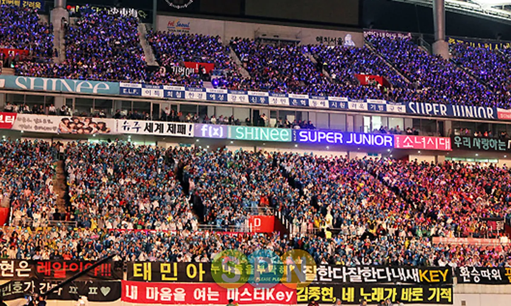
SM娛樂旗下五人男團「東方神起」出道，開啟了第二代韓團時代，而這也是韓國Kpop界最輝煌的「二代盛世」。 2005年Super Junior、SS501出道，2006年BIGBANG，2007年少女時代、Wonder Girls、Kara出道，第二代韓團風靡一時。從此時起，我們所熟知的SM、YG、JYP這三大公司也就此根深蒂固。第二代韓團的活躍時代碰上的網路世代的開始，也成為韓國偶像市場顯著成長的助力。2010年少女時代在韓國入口網站Naver上獨家發布MV預告時，還出現了網站癱瘓的情況。
此時，音樂通過數位音源收聽，實體唱片市場正在大幅下降。因此，專輯變向成為收藏品或對偶像的支持，也成功使得唱片銷量改制，將發行後一周的銷量定為粉絲規模的一個指標。也是從這個時代開始，第二代韓團詳細分成「專輯型偶像」和「音樂型偶像」：通常男性偶像是唱片型偶像，女性偶像是音樂型偶像。不過，無論他們屬於哪種類型，可以肯定的是，第二代韓團普遍都受到韓國人的喜愛，也是至今所有韓國人印象深刻的傳奇。一代韓團是Kpop的初試啼聲，並試試水溫，二代韓團則是把「藝人培訓至出道」視為一條龍的產業，同時發展成了比以往更加豐富多彩的型態。
《代表團體》 男團：東方神起、Super Junior、BIGBANG、SHINee、2PM、INFINITE、MBLAQ等（依照順序顯示於下方圖片）
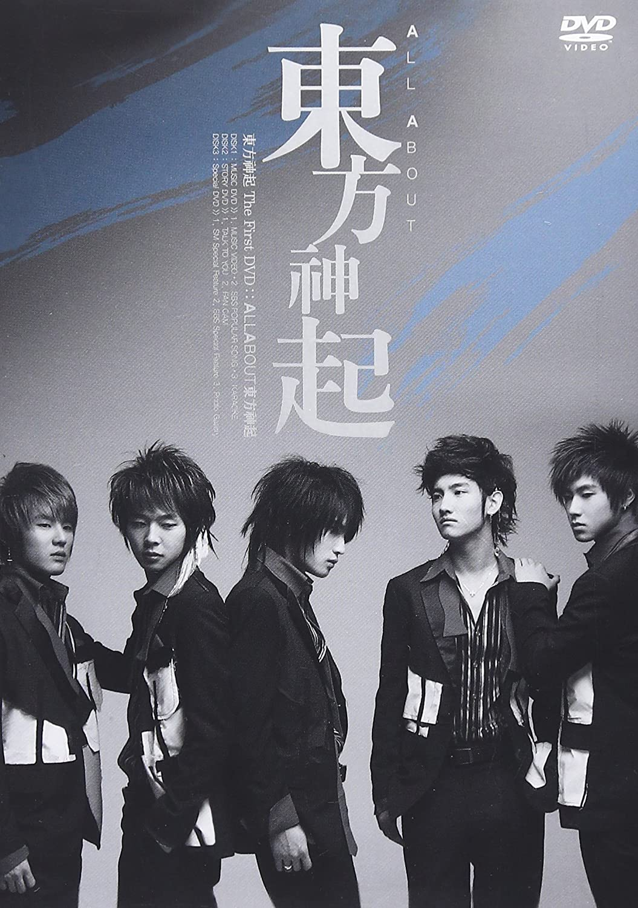
女團：少女時代、Wonder Girls、T-ara、Apink、Girl's Day、Miss A等（依照順序顯示於下方圖片）
《經典回顧》
Super Junior 海外成名曲〈SORRY,SORRY〉
Super Junior自2005年出道至今，超過16個年頭，2009年以一曲〈Sorry, Sorry〉成功打開海內外知名度，而後每每發行新歌，必定成為眾所矚目的焦點，更有韓流元祖之稱，他們的作品陪我們走過無數個青春歲月，充滿美好回憶。
影片來源：Youtube
少女時代爆紅歌曲〈Genie〉
想到少女時代的經典歌曲，第一個是《Gee》，第二個絕非《Genie》莫屬，大秀長腿的「毽子舞」，在 MV 一推出就大爆紅。除此之外，以「制服」作為打歌服也是超級亮點，將陸軍、警察、海軍等各種制服穿上身，每個舞台都換一套，展現可愛以外的性感魅力，連路人觀眾都忍不住死守舞台本放，正式奠定少女時代大勢女團的地位。
影片來源：Youtube
活躍時代：2013年至2019年（或至今）
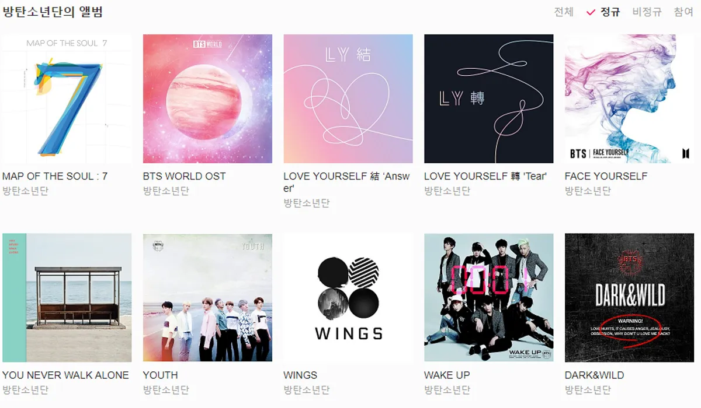
2013年EXO憑藉〈Growl〉大獲成功，象徵著Kpop的第三代韓團開始了。比起二代韓團的豐富度，第三代韓團創造了相當多元化，並且爆炸性的成長。在第二代韓團活躍的時候，雖然有很多可以出演的電視節目，但除了電視和廣播之外，沒有太多空間可以演出。到了三代就不一樣，承接了第二代韓團累積下來的豐富網路使用經驗，第三代韓團在Youtube、Naver、Vlive等平台，獲得了天文數字般的關注量。除此之外，不只有三個月至半年一次的音樂作品回歸，第三代韓團們積極使用網路製作個人化影音，新媒體的出現對偶像市場產生了重大影響。
第三代韓團爆炸性的成長還有音樂市場，被稱為「專輯膨脹」，繼東方神起在2008年首次打破10萬張的記錄後，長達五年沒有人再破10萬張，卻這個時間卻在2013年由新人EXO突破。二代與三代以網路、智慧型手機（自媒體、個人化裝置）為分界，將二代的輝煌表現與記錄，在三代更加發揚光大。若要說第三代韓團取得了全世界注目的優異表現，有很大一部分都是要歸功第二代韓團在那些年辛苦奠定的功勞。
第三代韓團的最大特點就是參與度高，相比過往，偶像與粉絲的關係被嚴格劃分為創作者和消費者，但這道界線從第三代韓團開始，感覺變成「偶像與粉絲同行」的感覺。當偶像回歸時，粉絲們為他們應援，通過音源刷榜、購買專輯、節目投票等來提高偶像的表現與能見度，當一些粉絲自願帶頭時，其他粉絲也會跟著行動，形成了相當巨大、可觀的粉絲動員，這樣的程度甚至更勝二代偶像的規模，變成一種系統性的追星活動。
《代表團體》 男團：BTS、EXO、Seventeen、GOT7等（依照順序顯示於下方圖片）
女團：BLACKPINK、TWICE、Red Velvet、EXID、MAMAMOO、GFRIEND等（依照順序顯示於下方圖片）
《經典回顧》
BTS 超強單曲〈Dynamite〉
防彈少年團首次拿下美國告示牌Hot 100冠軍單曲，甚至在韓國也拿下28個音樂節目冠軍，還打破3項金氏世界紀錄的超強單曲，其實並不是主打歌。不過特別的是，這首歌雖然收錄在《BE》中，卻是該專輯發行前，提早三個月就發行的單曲。當時團員表示，希望能透過這首歌曲，在新冠肺炎艱難的時期，為粉絲們帶來活力，也成為了當年度全球傳唱度最高的單曲之一。
影片來源：Youtube
BLACKPINK 出道歌曲〈BOOMBAYAH〉
以曲風獨特的〈Boombayah〉作為出道單曲，2016 年成軍的 BLACKPINK 以新人之姿打破韓國流行樂壇多項紀錄，被譽為「怪物新人」和「新紀錄製造機」。Jisoo、Jennie、Rosé 與 Lisa 等四名成員皆有不俗實力，其饒舌功底更讓她們從女團潮流中脫穎而出。2017 年，BLACKPINK 進軍日本也同樣大受歡迎，推出節奏強烈、更具國際化風格的〈As If It's Your Last〉，登上多國排行榜首位。雖然出道不久，BLACKPINK 在短時間內已躍升成為世界級女團，除了亞洲還進軍西洋樂壇，與英國歌手 Dua Lipa 合作〈Kiss and Make Up〉，展現全方位的音樂實力，未來不可限量。
影片來源：Youtube
活躍時代：2019年至今
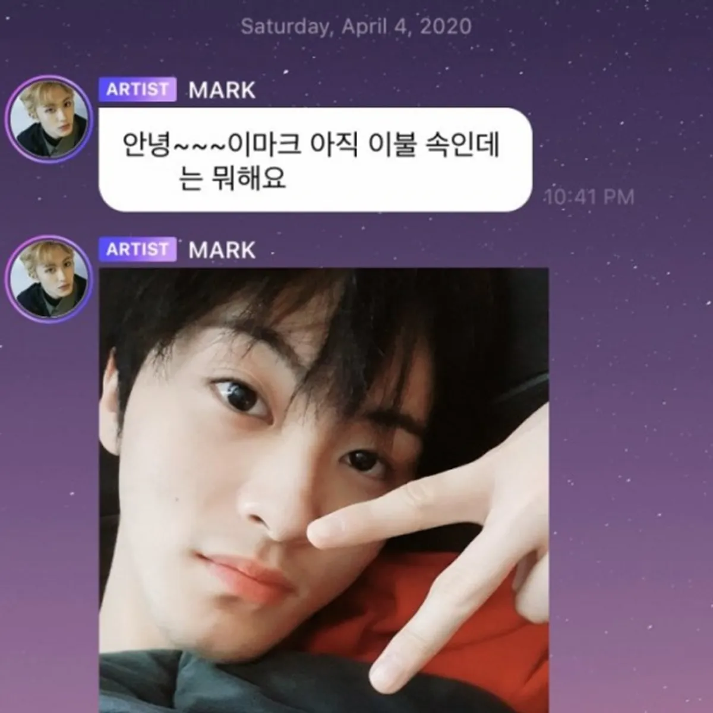
從2019年左右，直到此刻出道的團體可被泛稱為第四代韓團時代。當然，也有人認為四代時代還沒有到，是因為登頂三代的韓團還在上頭，目前四代韓團的表現，還沒有再創新記錄的趨勢，但值得注意的是，韓國偶像市場似乎已經飽和，新一代韓團似乎很難再超越第二代的輝煌、第三代的登頂。與第三代韓團不同，當初對於海外市場採取試水溫模式（畢竟二代韓團勇闖海外的前車之鑑太多），但從第四代韓團開始，從出道就瞄準了全球市場。以前偶像們習慣在韓國站穩腳步，再進軍海外，可是四代韓團們的特點是從出道開始，就努力成為一個全球性的組合。第四代韓團粉絲團的最大特點，是著重在網路平台的交流，隨著Lysn、Weverse和UNIVERSE等各種移動平台的創建，偶像和粉絲可以在這些平台上進行雙向交流。過去，韓國偶像在SNS的更新雖然也很頻繁，但透過新興平台的交流，讓偶像和粉絲之間的關係更加緊密。
《代表團體》 男團：Stray Kids、THE BOYZ、TREASURE等（依照順序顯示於下方圖片）
女團：EVERGLOW、STAYC、ITZY、aespa、(G)I-DLE等（依照順序顯示於下方圖片）
《經典回顧》
Stray Kids 超強單曲〈MANIAC〉
2022年Stray Kids登上美國告示牌「Artist 100」第1，發行的《ODDINARY》同時登上多個Billboard榜單，繼防彈少年團、SuperM之後，第三組登上「Billboard 200」冠軍的K-POP歌手，並獲得「JYP首位告示牌一位歌手」稱號，讓人相當看好他們未來的發展！Stray Kids通過JYP娛樂發表了感想，表示「在工作過程中，比起Billboard的成績，考慮得更多的是如何有效地展現我們的音樂和個性」。
影片來源：Youtube
ITZY 出道主打歌曲〈DALLA DALLA〉
韓國JYP娛樂公司推出全新女團ITZY，以終結「2019歌謠界女子團體」之姿強勢登場，由五名韓國成員藝智Yeji、LiA、柳真Ryujin、彩鈴Chaeryeong、俞娜Yuna組成，平均年齡17歲，顏值與實力超群，2019年2月12日發表出道主打歌《DALLA DALLA》，MV公開後24小時內即突破1,400萬觀看次數，創下K-Pop團體出道作品的新高紀綠，目前更以累計超過4,000萬觀看次數，展現ITZY與眾不同的強烈存在感！
影片來源：Youtube


 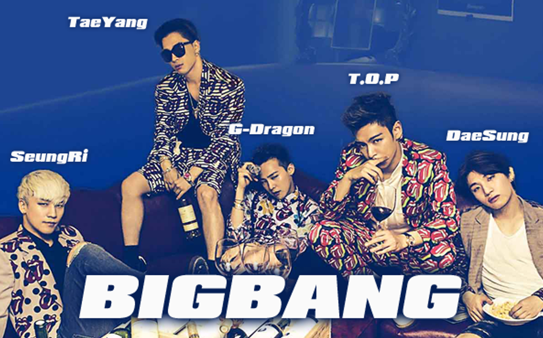
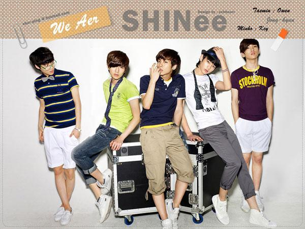
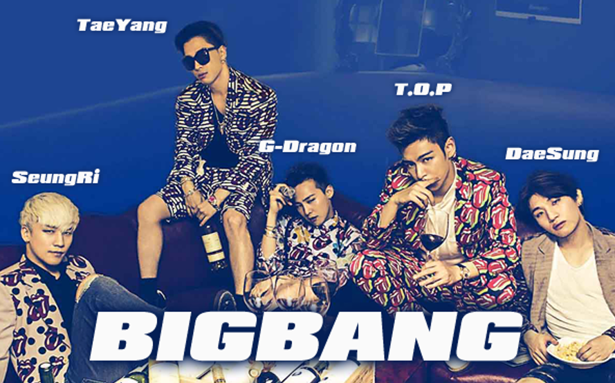
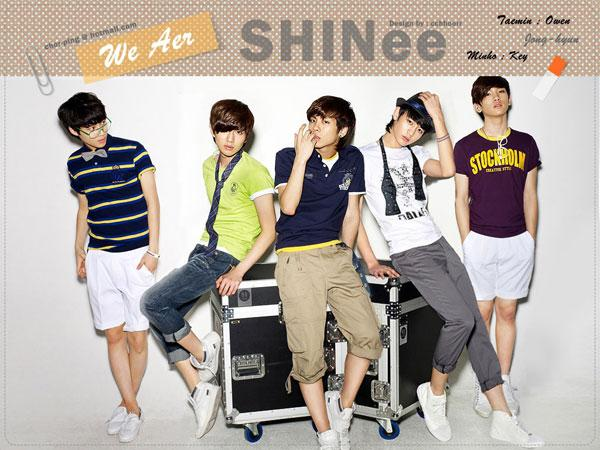


 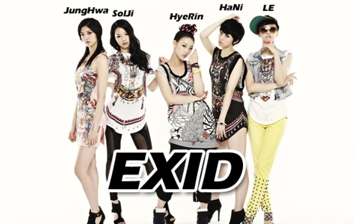
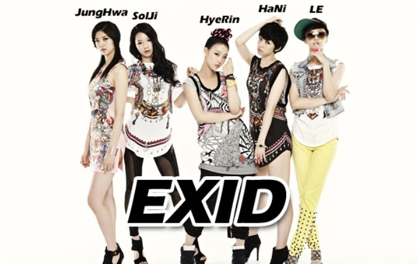
 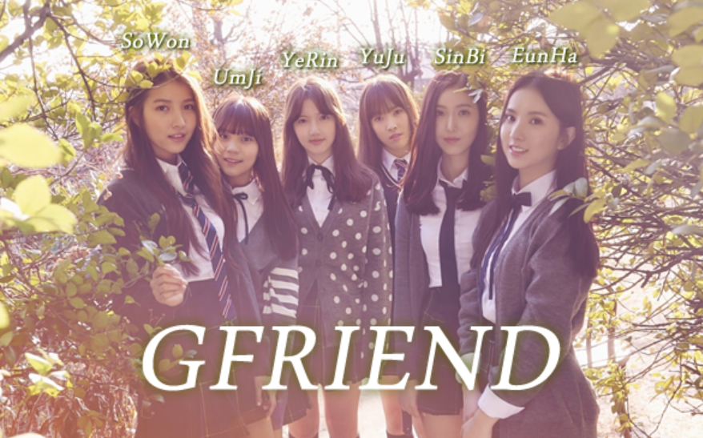
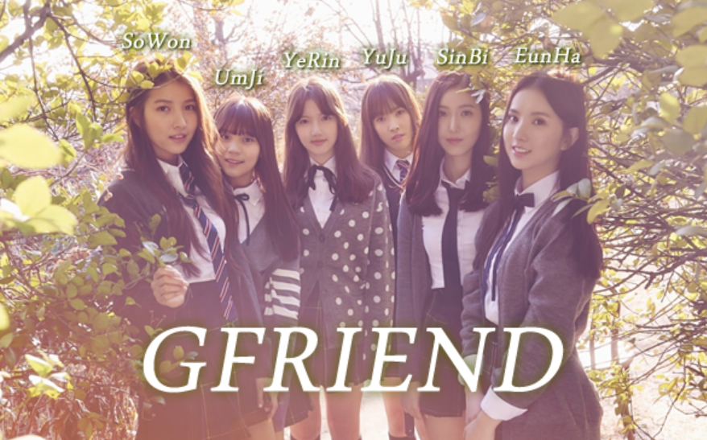